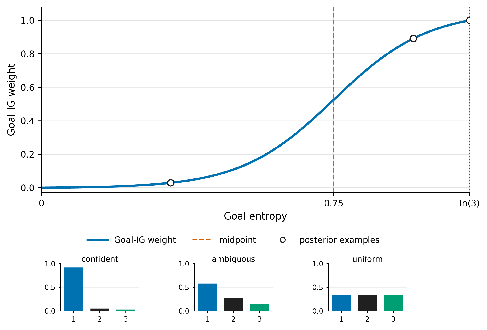
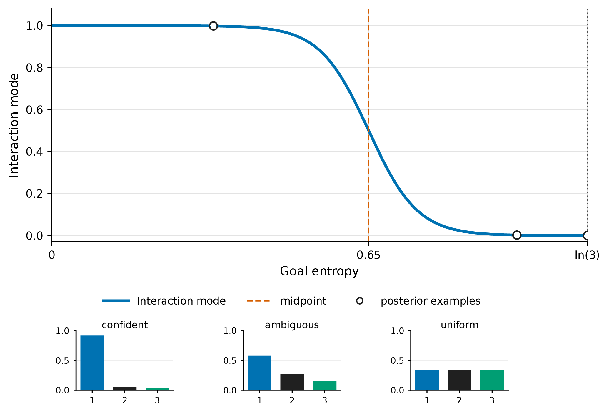
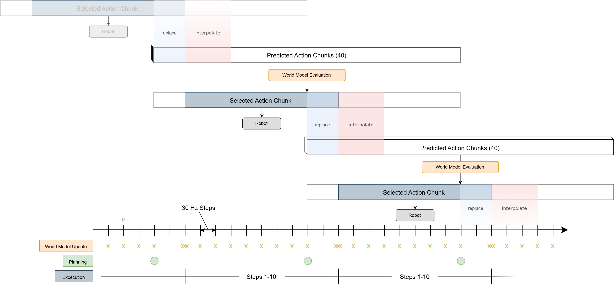

Problem
Physical human-robot collaboration combines human adaptability with robotic precision and strength. In shared object manipulation, the human's intended goal is often only partially visible from motion and contact forces.
Master Thesis Project
A real-time active-inference system for physical human-robot collaboration with a Franka Research 3 arm. The robot infers human intent, balances following and leading, and selects action chunks for collaborative box lifting and stacking.
Why It Matters
Physical human-robot collaboration combines human adaptability with robotic precision and strength. In shared object manipulation, the human's intended goal is often only partially visible from motion and contact forces.
A purely reactive robot can follow safely, but it cannot intentionally lead. This thesis uses deep active inference so the robot can choose actions that help the task while also clarifying the human's intention.
ACT is used as a fast stochastic proposal model for active inference, generating diverse short-horizon action chunks that can be ranked by expected free energy in real time.
The proposed system combines an Action Chunking with Transformers policy model, a learned world model, and an explicit categorical posterior over human goals. Candidate action chunks are evaluated by expected free energy, balancing information gain about the human's goal and hidden interaction state with pragmatic value for leading or following behavior. On a Franka Research 3 robot in a force-dependent collaborative box-lifting and transport task, the framework reduces goal uncertainty faster than passive inference baselines and provides stronger collaborative assistance, while also showing that EFE selection depends strongly on world-model accuracy.
Result In Motion
Method
End-effector pose, velocity, wrench, tracking error, command pose, last action, and interaction labels are collected into a temporal observation window.
An ACT-based policy model proposes temporally coherent Cartesian action chunks. A world model evaluates future observations under those candidate policies.
Expected Free Energy combines pragmatic value, goal information gain, and state information gain. The lowest-EFE trajectory becomes the selected action chunk.
The controller executes the selected chunk while the world model updates from new observations at 30 Hz.
Interactive Explainer
When goal certainty is low, the system values information gain and tends to follow or explore to infer the human's intended goal.




Implementation
The inference runtime builds the recent interaction history and sends it to a GPU server. The server proposes candidate action chunks, evaluates them with the world model, and returns the selected action for the robot.

Control Layer
Tracks selected end-effector pose commands with stiffness, damping, torque limits, wrench limits, startup protection, and first-command smoothing.
Converts measured external wrench into compliant motion. This supports human-following behavior and can receive equilibrium and gain commands for variable-stiffness AIF experiments.
The execution layer interpolates selected action chunks, keeps commands inside the workspace, handles stale predictions, and coordinates finish/reset behavior between trials.

Teleoperation And Data

The FACTR leader arm provides demonstrations by mapping the operator's motion to Cartesian commands for the Franka follower. The stack supports filtering, gravity compensation, optional force feedback, and Robotiq gripper control.
The recorder synchronizes robot motion, interaction forces, camera frames, selected actions, candidate trajectories, goal belief, EFE components, surprise, and timing into dataset samples.
Experiments


Conclusion
The full active-inference system reduced uncertainty about the human's intended goal more quickly than passive inference and non-planning policy baselines. The explicit goal posterior enabled a confidence-dependent transition: the robot stayed compliant when uncertain and provided stronger goal-directed assistance once the intended goal became clearer.
The benefit of EFE-based selection depends on world-model accuracy, and the experiments were limited to a controlled task with fixed goals and one human operator. Future work should improve dataset coverage, reduce rollout noise, evaluate multiple participants, add visual scene conditioning, study action-chunk length, and replace threshold-based mode switches with continuous coupling through goal entropy and surprise.